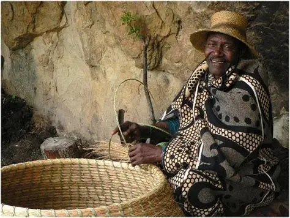
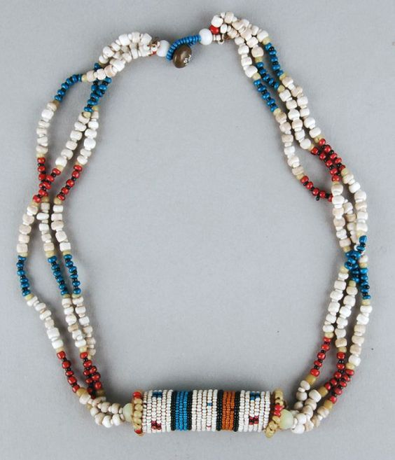
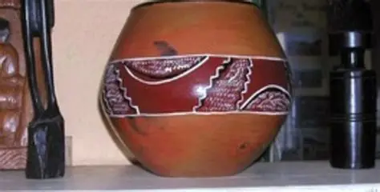

Basotho hand-made traditional items vary but all have significant meanings and specific colours and patterns. This is because they showcase the rich and deep history of formation of the Basotho culture. So these are only a few of the arts and crafts that are considered when refering to the Basotho culure as a whole.
Woven baskets are baskets made from local grasses and reeds. These baskets althogh serving a practical purpose they are often appriciated for their craftsmanship and intricate designs. Here's the link for more infomation.

Cultures like Zulu or Ndebele are mostly known for their beads while basotho have their own types of beads that have significant means. Basotho beads are commonly worn in ceremonial arrites, belts and jewellery. These beads have specific colours and specific arrangement, which denote the diffrent stages in an indivuals life. These stages can include marital status and community standing, meaning each bead can tell a story about the wearer. Click the link for more infomation.

Pottery also holds significant value to the conuntry to which the Basotho culture was established. These beautifal cratfs can used as kitchenware and even decorations, designs may vary but they often showcase Basotho traditional motifs and symbols making them unique. Here's the link for more infomation.
